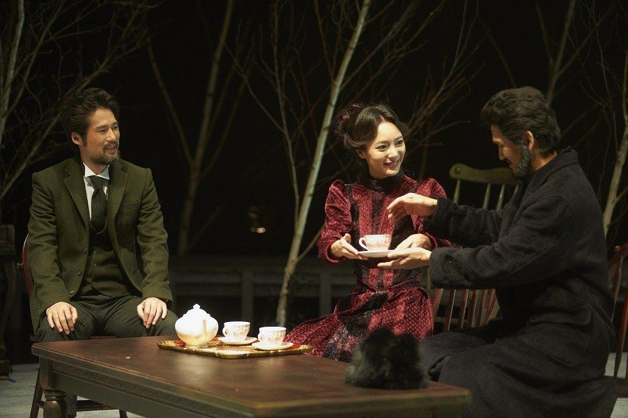

안톤 체홉이 사할린 섬을 여행하고 돌아와 발표한 단편소설 〈공포〉를 바탕으로, 소설 속 화자 '나'를 체홉 자신으로 설정해 새롭게 구성한 희곡. 사할린에서 돌아온 체홉은 시골 농장을 경영하는 친구 실린의 집을 찾는다. 결혼 전부터 알던 실린의 아내 마리, 술버릇 때문에 쫓겨났던 하인 가브릴라, 그리고 자신을 경멸하는 여자를 사랑하는 실린. 이해할 수 없는 삶 앞에서 혼란스러워하는 사람들을 통해 인간의 속성과 삶의 본질을 탐구한다.
2013.12.13–22 / 서강대 메리홀 대극장
2014.9.25–10.5 / 서강대 메리홀 대극장
2018.5.4–13 / 대학로예술극장 대극장 - 서울연극제 재공연부문
작: 고재귀
연출: 박상현
무대: 박상봉
조명: 남경식
의상: 윤보라
소품: 김현민
음악: 민경현
분장: 이동민
그래픽: 김솔
사진: 박정근
조연출: 육지
기획: 드림아트펀드
출연(2013): 김태근, 이동영, 김수안, 신덕호, 신재환, 정은경, 이필주, 박하늘
이전: 데스데모나-웬 손수건에 관한 연극 | 다음: 오시비엥침 기록극
아카이브로 돌아가기 | 아무 작품이나
발행일 2026.11.13